Apple Lightning (cont.) - serial number reading
Why am I talking about this?
Recently several people contacted me with an issue where their Serial Number Reader cables randomly stopped working: 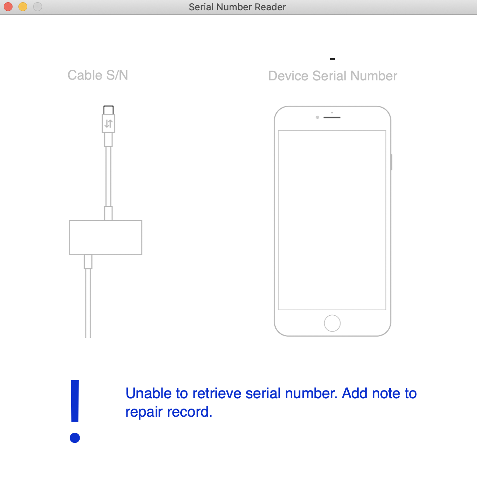So in order to try to help them, I had to reverse engineer (just a little bit) Serial Number Reader application, sniff some HTTP-requests and try to understand how it's supposed to work and why it doesn't at all in some cases
Resulting research seems quite interesting to me, so I'm sharing it with anyone who might be interested in it as well
Please note, that since it's a client-server interaction that's discussed here, we can know for sure only what happens on the client side. What about the server side, we can only guess - successfully or not
What is Serial Number Reader cable?
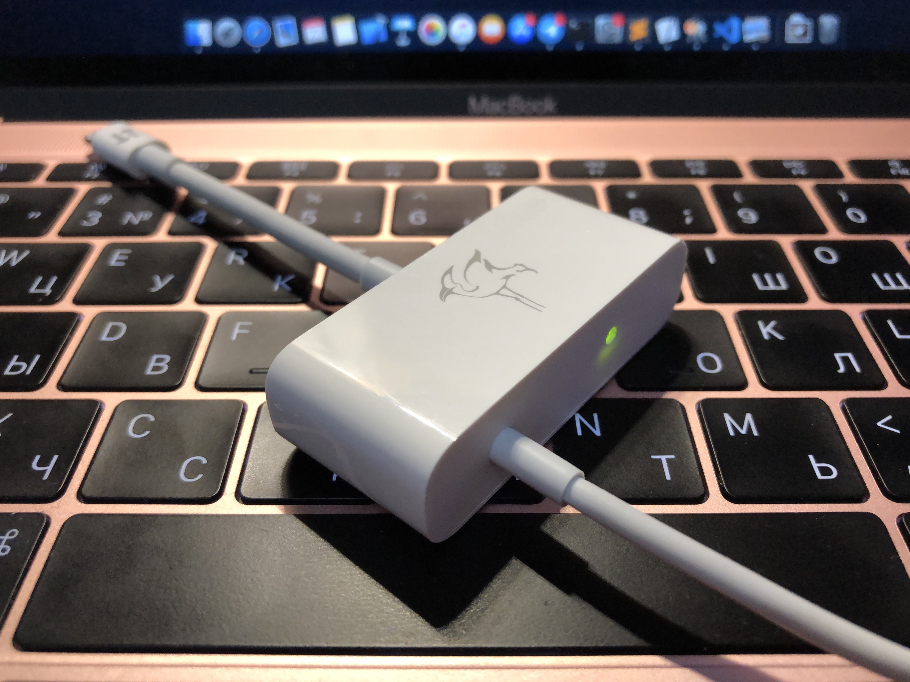It's a cable that's used by Apple and some of their resellers to get serial number from a dead iOS-device (given its Tristar/Hydra is still alive)
Based on the Kanzi cable. It's not even based, it is Kanzi. Just with different USB Product ID (0x1621 on Kanzi vs. 0x1624 on SNR) and a little bit different housing (lacks the beautiful artwork on the front, blocks access to the female Lightning and ARM Cortex Debug 10-pin connector, which isn't even soldered to the board). Firmware is same
Also known as just SNR and Nova Cable
What is Kanzi cable?
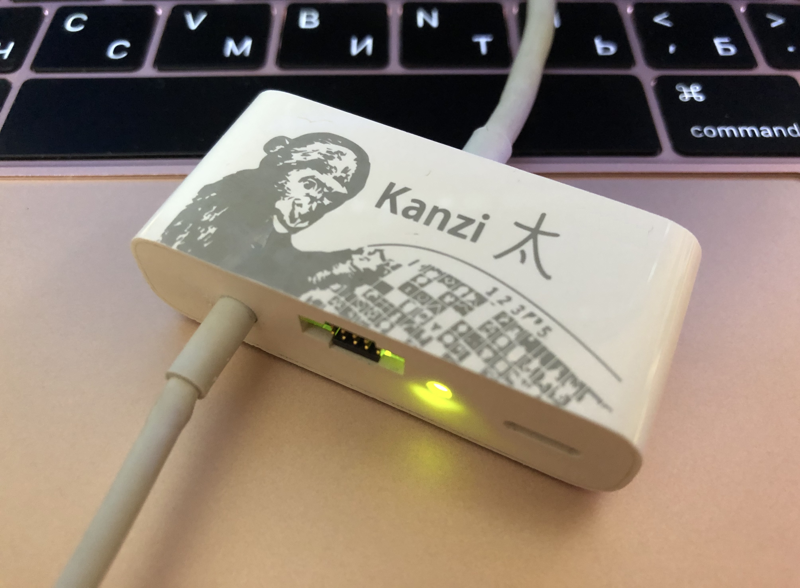It's a cable that's used by Apple's own engineers to debug various hardware (mainly iOS-devices, of course) with SWD (Serial Wire Debug - JTAG for ARM cores)
Yes, you can use Kanzi to read serial numbers and use SNR to debug iPhones (since it's the same hardware and software). Requires little patches in Serial Number Reader.app (macOS app designed to make use of a SNR - that's the one to be RE'd) and astrisprobed (piece of Astris - debugger software designed to make use of Apple's SWD-probes, Kanzi is one of them) respectively
Based on STM32F407IGH6 MCU (ARM Cortex-M4, up to 168 MHz)
Also known as KanziSWD
What else should you know?
There're way too many aspects of Kanzi/SNR to be described in this little article, so we will only focus on those several of them we'll need later:-
Environment variables - Kanzi/SNR can store some persistent data (across reboots) that defines its behavior. Accessible via astrisctl tool:
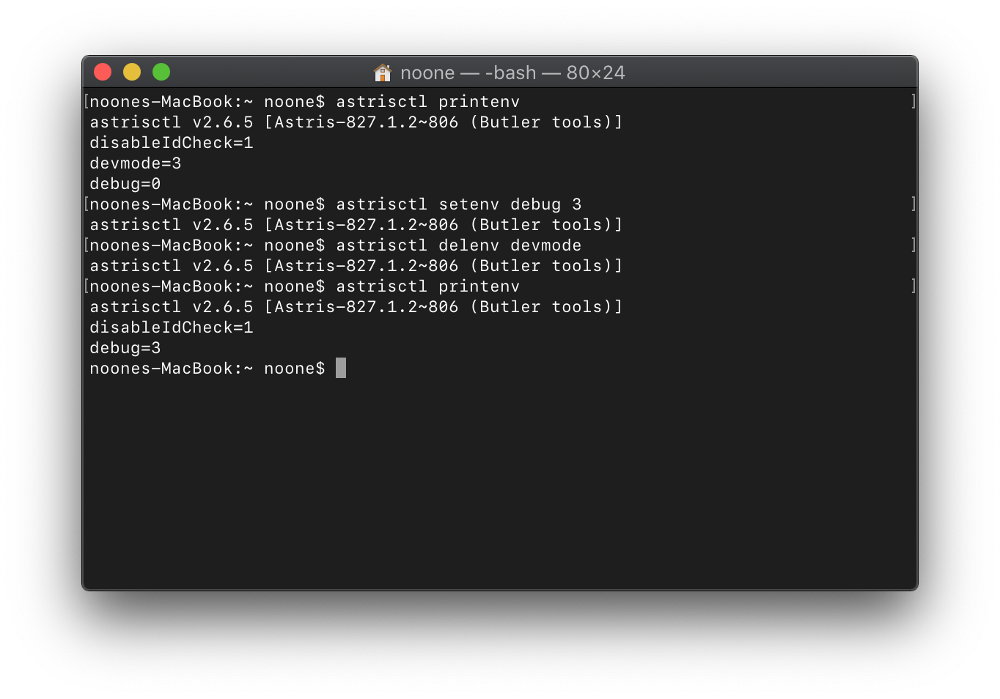
There are pretty many of those, but the most useful of them is debug. Setting certain bits of this var unlocks additional debug output to cable's VCOM (Virtual COM port):
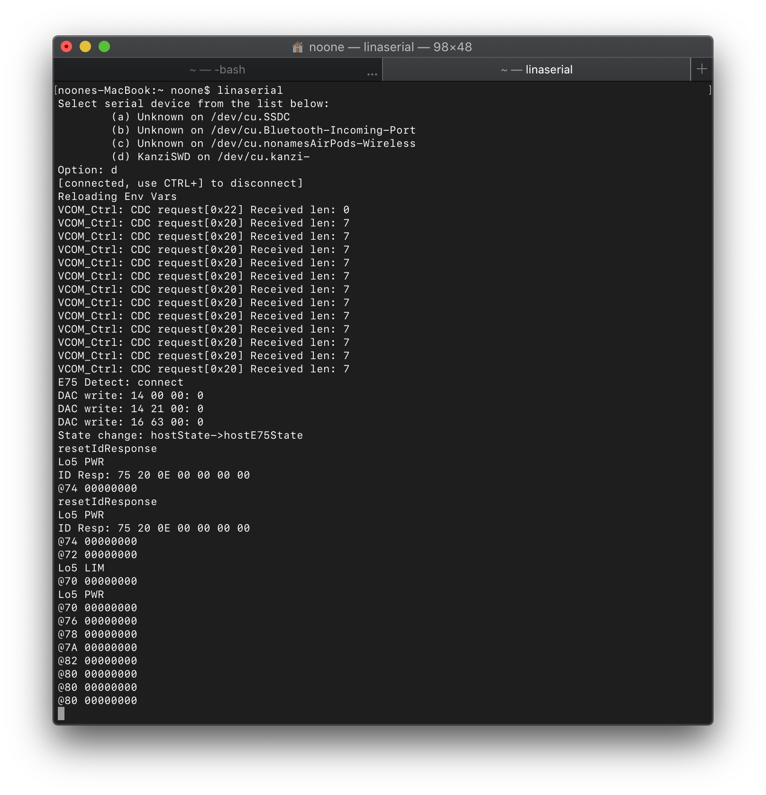 ...and even some features like diagnostics -
Relays - similar to env vars, but used to send commands, read some indicators and in some other ways control behavior of a cable. Non-persistent. Just like the env vars, accessible via astrisctl:
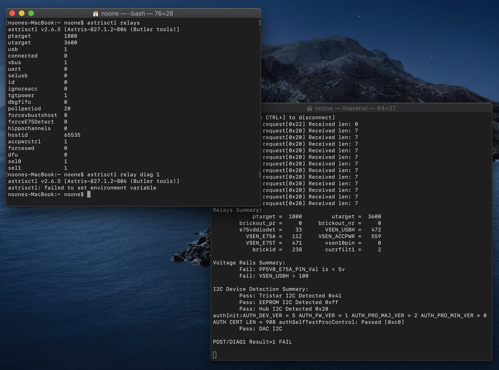
You can also see diags functionality in action here
-
I2C - Kanzi's MCU communicates with various other hardware like DAC, EEPROMs, Tristar (yes, it has Tristar - appears to be TI THS7383) and Mozart (that's the root of the problem by the way - details below) over I2C interface. Two I2C devices are available over USB from outside:
- NVRAM EEPROM (address 0x56/0x57) - stores env vars
- Buffer (address 0xAE/0xAF) - used for a data exchange between KFL (Kanzi Fraud Library - part of Serial Number Reader.app used to interact with Kanzi/SNR). Most likely it's kind of a pseudo-device
Accessible over Astris: 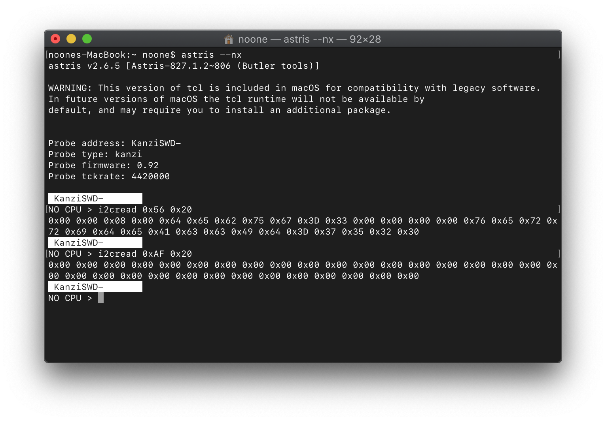
The algorithm
All the information below is based on the RE of Serial Number Reader.app (its binary is fully symbolicated, by the way, and this is very convinient) and sniffing a traffic between my machine and ttrs.apple.com (I'm using a program called Charles for this purpose)To understand what's going on below, you might want to read this first
Reading ESN
First of all, Serial Number Reader.app reads ESN (Electronic Serial Number). Here is how it's done:- Write "\x02Get ESN" to the data exchange buffer
- Write 0x1 to authcmd relay and wait until it becomes 0x0 again - from now on we will name this procedure - writing a number to authcmd relay and waiting - like this: to execute command
- Read 16 bytes from the data exchange buffer. First 8 bytes are an ESN
-
WAKE is initiated by a cable:
74 00 02 1f -> 75 60 00 00 00 00 00 df
From now on data portions of IDBUS requests/responses are colored for convinience
If we decode the response, we'll see that such sequence must enable debug UART on ACC lines. What?! Well, the decoding tables from my previous article were grabbed from TI THS7383 Tristar datasheet, which was one of the first of them. On Tristar 2 and Hydra this sequence enables SNR mode -
Now, it sends "\x02Get ESN":
7e 09 aa -> 7d 02 47 65 74 20 45 53 4e 00 fb
-
Finally, it receives ESN (first 8 bytes, in reversed order) along with something else (later 8 bytes):
7c R E D A C T E D R E D A C T E D aa -> 7f 8c
First request
After acquiring ESN it sends it to Apple:
GET /TRISTAR/FGSN?VERSION=1&DEVICE_ID=B64_ESN_REDACTED HTTP/1.1
Host: ttrs.apple.com
Accept: */*
Accept-Language: en-us
Connection: keep-alive
Accept-Encoding: gzip, deflate
User-Agent: Serial%20Number%20Reader/105 CFNetwork/978.3 Darwin/18.7.0 (x86_64)
Response is a JSON:
{
"SESSION_ID": "9112f805-74da7718-0175-6609296b-42de",
"MESSAGE": "ok",
"STATUS": "200",
"KEYSET_ID": "2",
"CHALLENGE": "B64_CHALLENGE_REDACTED",
"DEVICE_ID": "B64_ESN_REDACTED",
"VERSION": "1"
}
Get verifier
The next step is to get something called VERIFIER (another 8 bytes blob)To accomplish this task we have to do the same thing like in the step 1 (reading ESN), but instead of "\x02Get ESN" we need to send the following structure:
struct {
uint8_t keyset; //subtract 1 from the server one!
uint64_t challenge;
}
As result, we can see this on IDBUS:
7e 09 aa -> 7d 02 R E D A C T E D d3
7c R E D A C T E D R E D A C T E D 67 -> 7f 8c
Compose a final request's payload
This step is quite simple - add the VERIFIER to the previous request's response body. Also remove MESSAGE, STATUS and VERSION from there. So in the end it looks like this:
{
"KEYSET_ID":"2",
"CHALLENGE":"B64_CHALLENGE_REDACTED",
"VERIFIER":"B64_VERIFIER_REDACTED",
"DEVICE_ID":"B64_ESN_REDACTED",
"SESSION_ID":"9112f805-74da7718-0175-6609296b-42de"
}
Sign the payload
Everything described above can be done with your own hardware. Apple couldn't let this happen, so they added another layer of protection to this mechanism - they sign the final request. Here is how it's done:- Take a SHA1 hash of the JSON payload we prepared in the previous step
- Write that hash to the exchange buffer
- Execute the command 0x4, this will make it remember the hash
- Execute the command 0x5, then read 2 bytes from the exchange buffer - this is a length of the signature, must always be 128
- Execute the command 0x6, then read 128 bytes from the exchange buffer - this is our signature
- Execute the command 0x2, then read 4 bytes from the exchange buffer - this is a length of the certificate
- Given the certificate length, make a loop that will read the certificate itself with portions of 128 bytes: write (offset & 0xFF00) >> 8 (basically offset / 128) as 32-bit integer to the exchange buffer, execute the command 0x3 - this sets current offset for reading, and read from the exchange buffer - this is the requested portion of the public certificate
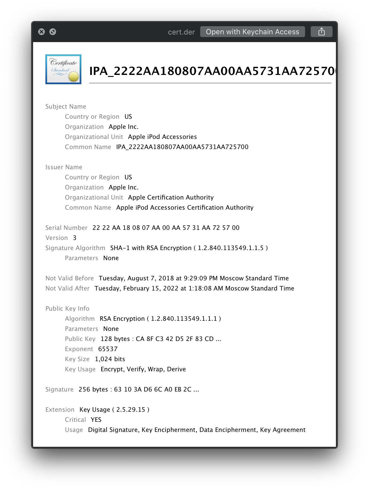
Compose and send the final request
Time to compose everything we gathered in the previous steps in a single request and finally get our SN. Compose a POST request with a form data: with the following fields (all values encoded as Base64):- B64_PAYLOAD - the JSON we prepared before
- B64_SIGNATURE - the signature
- B64_CERTIFICATE - the certificate
POST /TRISTAR/FGSN?VERSION=1 HTTP/1.1
Host: ttrs.apple.com
Content-Type: application/x-www-form-urlencoded
Connection: keep-alive
Accept: */*
User-Agent: Serial%20Number%20Reader/105 CFNetwork/978.3 Darwin/18.7.0 (x86_64)
Accept-Language: en-us
Accept-Encoding: gzip, deflate
Content-Length: 1696
B64_PAYLOAD=REDACTED
B64_SIGNATURE=REDACTED&
B64_CERTIFICATE=REDACTED
{
"SESSION_ID": "9112f805-74da7718-0175-6609296b-42de",
"MESSAGE": "ok",
"STATUS": "200",
"VERSION": "1",
"FGSN": "SN_REDACTED"
}
So what can go wrong?
The public certificate can expire, like this one: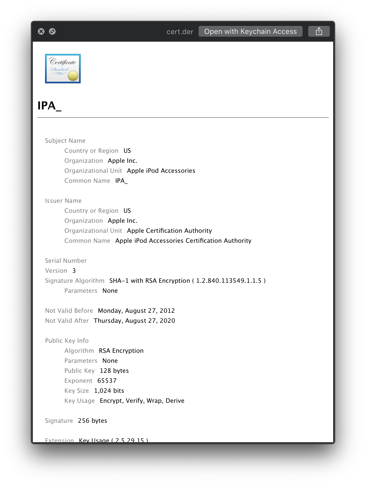
In this case the Apple's server will return code 403 (Forbidden) and the status message will tell you about a signature verification failure
According to my information, all the 2XXXXX series of cables (and supposedly everything older) and even some of the 3XXXXX one (definetely 310XXX) have certificates that expired
Can we sign requests with a new certificate?
I suppose not, as this will also require a hash to be signed with a new private keyCan we extract a private key?
That's a very interesting question, indeed. The problem is that main MCU of Kanzi or SNR (which we can fully control) is not in charge of signature generationInstead, it's done via Mozart, which can be talked to via I2C (its address appears to be 0x20/0x21). What it is by its nature is currently unknown. But on some of the previous screenshots in this article you could notice a special diagnostic message:
authInit:AUTH_DEV_VER = 5 AUTH_FW_VER = 1 AUTH_PRO_MAJ_VER = 2 AUTH_PRO_MIN_VER = 0 AUTH CERT LEN = 908 authSelfTestProcControl: Passed [0xc0]
The AUTH_FW_VER bit though is telling us that it might be something that runs some sort of firmwareSo, nothing to be done?
Mozart doesn't require any auth to sign a hash. So you can theoretically abuse it - I've created a little application that takes advantage of this flaw (is it?) and allows to sign arbitrary hash given a Kanzi or SNR (requires patched astrisprobed in the current implementation) is connected: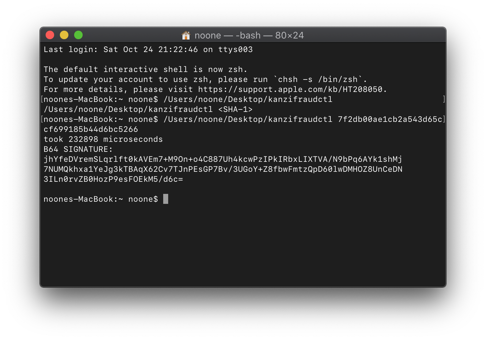
My tests show that Mozart does have some kind of throttling. Well, maybe the tests are just bad:
while true; do kanzifraudctl 7f2db00ae1cb2a543d65ccf699185b44d6bc5266; done
...but at some point the procedure begins to take more and more time, and when this time is around 0.52 seconds it stops generating signatures at all: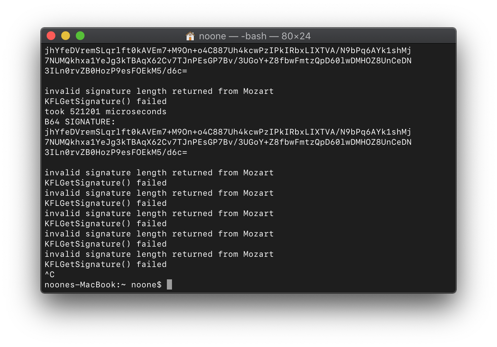
If there's any demand for this tool, I'll publish its source code to my GitHub